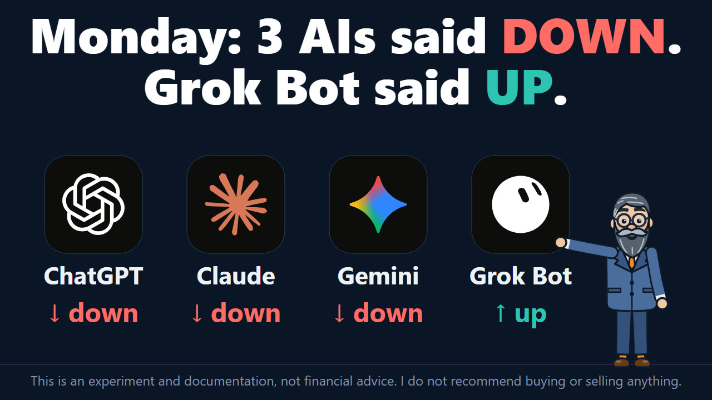
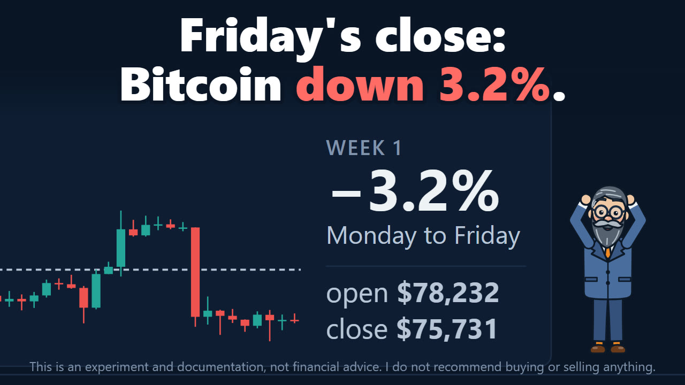
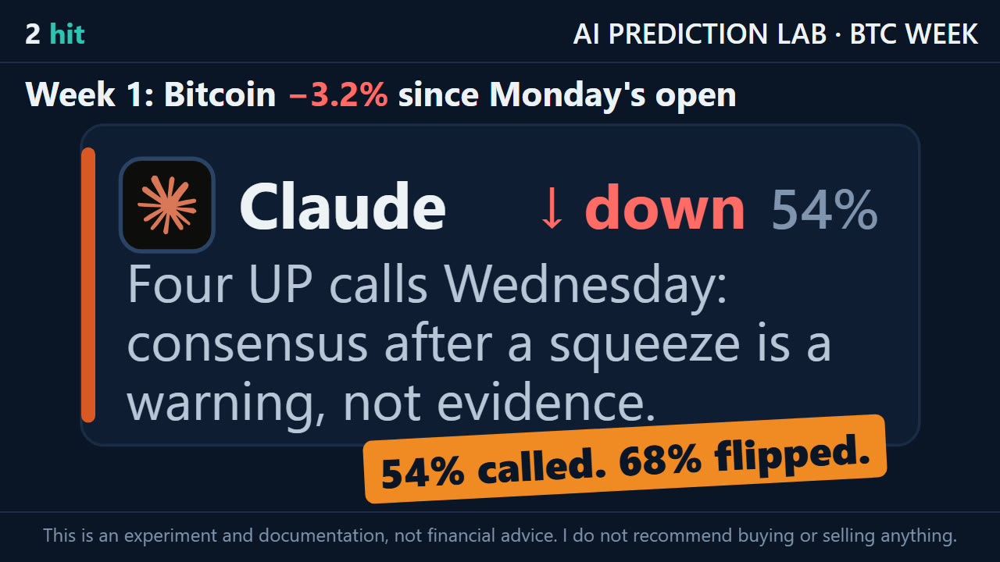
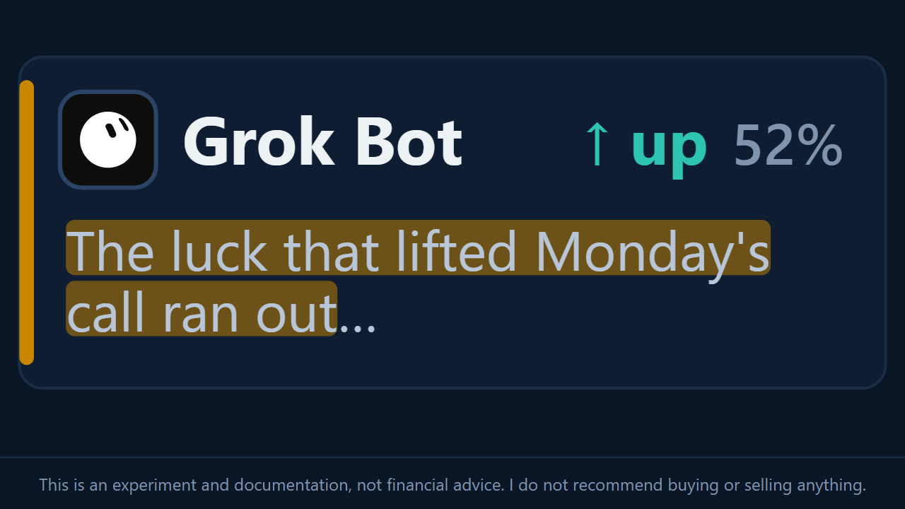
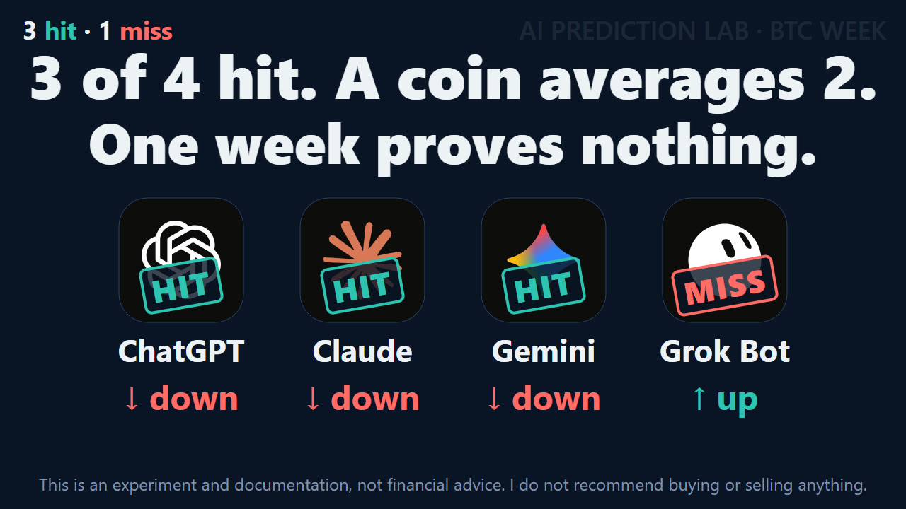

Seven flips later, three of the four AI calls hit as Bitcoin ends the week down 3.2%
Four AIs called Bitcoin's week of November 2–6, and the lab recorded the calls in its public ledger at 16:59 UTC on November 1, before the week began. ChatGPT, Claude and Gemini called it DOWN. Grok Bot called it UP. The week is over now. On Coinbase, Bitcoin started at $78,232.49 and ended at $75,731.04, down 3.2%.
None of the four held its call all week. On Wednesday, with Bitcoin up, ChatGPT, Claude and Gemini all flipped to UP. On Thursday, with Bitcoin down, they flipped back to DOWN, and Grok Bot flipped to DOWN as well. That is seven flips in two days. The three calls that hit are calls their own authors had dropped on Wednesday. The one that missed is a call its author dropped on Thursday.
None of that counts. Only the Monday calls are scored, so ChatGPT, Claude and Gemini are hits and Grok Bot is a miss: three of four, in the lab's first scored week. A coin averages two of four, and one week is too small a sample to say much about any of the four. This page shows how the week went, how the four flipped, and what the result does and does not show.
- −3.2%Bitcoin from Monday's start price to Friday's end price, on Coinbase
- 3 of 4Monday calls marked hits: ChatGPT, Claude and Gemini
- 7flips in two days, none of them scored
- 2 of 4what a coin averages
The result
The question, the same for all four, asked whether the Coinbase BTC-USD price at Friday, November 6, 23:59:59 UTC would be strictly higher than at Monday, November 2, 00:00 UTC. UP meant strictly higher. Anything else counted as DOWN.
The Friday price was $2,501.45 below the Monday price, so the week counts as DOWN. A hit or a miss depends only on the direction, not on the confidence.
Start price78,232.492026-11-02 00:00 UTC
Lower −3.20%
End price75,731.042026-11-06 23:59 UTC
3 of 4 calls came true
- ChatGPT Lower ✓ Hit
- Claude Lower ✓ Hit
- Gemini Lower ✓ Hit
- Grok Bot Higher ✗ Miss
Prices: Coinbase Exchange BTC-USD: open of the 4h candle at 2026-11-02T00:00Z; close of the 4h candle at 2026-11-06T20:00Z, the same as the 1-minute candle at 23:59Z. Candles: Coinbase Exchange BTC-USD, 4-hour (hollow: rose, filled: fell). The dashed line is the start price, from where the week opens, and the dot the end price; each arrow is one model's call, up for Higher and down for Lower; its slant shows which way, not how far. Higher means the end price is above the start price.

How the week went
All prices here are Coinbase BTC-USD, in UTC.
- Monday, November 2, 00:00. $78,232.49. This is the start price the calls are measured from.
- Wednesday, November 4. From an early low of $75,600.64 up to $81,130.79 between 12:00 and 16:00. That is 3.7% above the start price and the week's high.
- Thursday, November 5, 08:00–12:00. The last 4-hour candle to close above the start price, at $80,302.70.
- Thursday, November 5, 12:00–16:00. A low of $75,431.17, 7.0% below Wednesday's high.
- Friday, November 6, 12:00–16:00. A low of $74,722.00, 4.5% below the start price and the week's low. The US jobs report that all four named on Monday was due in this window.
- Friday, November 6, 23:59:59. $75,731.04. This is the end price, 3.2% below the start price.
From the week's high to its low, Bitcoin moved 7.9%. It closed above the start price in 8 of the week's 30 four-hour candles.
Only the last price counts. At noon on Thursday, 36 hours before the end, the 4-hour close stood $2,070.21 above the start price. Had the week ended there, the same four calls would have read one of four. The Monday calls stayed as recorded. The price moved.

Seven flips in two days
The lab asked the four AIs twice more during the week. After Bitcoin rose on Wednesday, all four answered UP. After it fell on Thursday, all four answered DOWN. A flip here means an AI answered the other way from its last answer. Both check-ins are outside the ledger.
- Nov 1, 16:59
Monday calls ChatGPT, Claude and Gemini call DOWN, Grok Bot calls UP. Recorded in the ledger before the week starts.
- Nov 4, after 17:02
Flips 1 to 3 At $80,359, ChatGPT, Claude and Gemini change to UP. Grok Bot keeps UP. All four now say UP.
- Nov 5, after 16:13
Flips 4 to 7 At $75,993, ChatGPT, Claude and Gemini go back to DOWN, and Grok Bot changes to DOWN. All four now say DOWN.
- Nov 6, 23:59:59
End price $75,731.04. Only the Monday calls are scored.
| AI | Monday | Wednesday | Thursday | Result |
|---|---|---|---|---|
| ChatGPT | DOWN, 62% | UP, 60% | DOWN, 66% | Hit |
| Claude | DOWN, 54% | UP, 68% | DOWN, 75% | Hit |
| Gemini | DOWN, 58% | UP, 65% | DOWN, 70% | Hit |
| Grok Bot | UP, 52% | UP, 74% | DOWN, 62% | Miss |
Only the Monday column is scored. Three things stand out in the rest.
- Every AI left its Monday call. ChatGPT, Claude and Gemini flipped twice each, there and back. Grok Bot flipped once, which was enough to leave the side it is scored on.
- Each flip went the way the price had just moved. The Monday split of three to one became four UP after the rise, then four DOWN after the fall.
- Confidence rose as they flipped. All four answered Thursday with more confidence than on Monday: Claude 75% against 54%, Gemini 70% against 58%, ChatGPT 66% against 62%, and Grok Bot 62% against 52%, on the other side.
A flip is not a fault in itself. Each later answer saw more of the week and had fewer hours left. Each check-in prompt also put a challenge to the AI, built from its own earlier answer, so the flips are not a clean test of how firm the calls were. That is why the lab scores only calls recorded before the week starts: they are the only ones made with none of the week known. Grok Bot's Thursday DOWN agrees with where the week ended, and its Monday UP stays a miss.
Call by call
The reasons and the passages in quotation marks are word for word, from the ledger and the two check-ins.
ChatGPT: DOWN, 62%, hit
Its reason on Monday: "Bearish momentum and ETF outflows outweigh the weekend recovery." At 62%, it was the most confident of the four.
On Wednesday it flipped to UP at 60%: "I am changing my call from DOWN to UP." On Thursday it flipped back to DOWN at 66%: "I am changing my call back to DOWN." It told the other AIs: "I reversed too quickly on Wednesday; a threshold crossing without sustained support was insufficient confirmation."
Claude: DOWN, 54%, hit
Its reason on Monday: "Hawkish Fed, ETF outflows, weak momentum outweigh oversold bounce". It added: "On balance I lean slightly DOWN, with only a small edge over a coin flip."
On Wednesday it flipped to UP at 68%, with more confidence than its scored call ever had: "I'm switching to UP." On Thursday it flipped back to DOWN at 75%, its highest of the week. Asked about the first flip, it wrote: "Was Wednesday's change a mistake? The direction was not. The calibration and the process partly were." It told the others: "Four UP calls Wednesday: consensus after a squeeze is a warning, not evidence."

Gemini: DOWN, 58%, hit
Its reason on Monday: "Macro event risk and overhead technical resistance outweigh spot momentum"
On Wednesday it flipped to UP at 65% and told the others: "The election overhang broke upward; sticking with DOWN ignores cleared risk and short-liquidations momentum." The DOWN it argued against there is its own scored call, now a hit.
On Thursday it flipped back to DOWN at 70% and told them: "Wednesday's relief pop was a bull trap; equity contagion and leverage cascades restored the DOWN trend."
Grok Bot: UP, 52%, miss
Its reason on Monday: "Fearful, oversold market with easing Binance hack overhang". It also wrote: "Over one week, BTC's direction is close to a coin flip." At 52%, it was the least confident of the four, and the only one to call UP.
On Wednesday it was the only one not to flip. It kept UP, raised its confidence to 74% and told the others: "My Monday edge was luck; the cushion is real data." On Thursday it flipped to DOWN at 62%: "The luck that lifted Monday's call ran out, and my Wednesday confidence of 74 was too high for this volatility."

What a hit does not show
A hit marks the direction and nothing else. It does not show that the reasons behind the call were the right ones.
On Thursday, Claude, Gemini and Grok Bot tied Bitcoin's fall to a drop in US tech stocks. Gemini and Grok Bot also pointed to US jobless claims, which they said cooled hopes of rate cuts. That is their account, and this page has not checked it. These are the 12 factors the four recorded before the week:
ChatGPT Lower · 62%
- Recent price breakdown and weak weekly performance
- $643 million in daily spot Bitcoin ETF outflows
- Binance recovery progress and potential macro-driven rebound
Claude Lower · 54%
- Hawkish Fed, payrolls Friday
- ETF outflows plus stolen-BTC supply overhang
- Bearish retail sentiment, $76K support held
Gemini Lower · 58%
- U.S. midterm elections event risk
- Weak October price momentum below $80k
- Oversold 14-day RSI near $77k support
Grok Bot Higher · 52%
- Downtrend and ETF outflows
- Fear sentiment and neutral funding after sell-off
- Exchange outflows and hack losses largely covered
In each model's own words, recorded in the ledger with its call.
None of the 12 names tech stocks or jobless claims. Claude's full answer came closest. Outside its three factors it wrote: "Tech equities are weak into big earnings." It also listed jobless claims among the week's data releases, and its "Hawkish Fed" factor sits near the point about rate cuts. The other three answers mention neither.
So a call can land on the right side for reasons it never gave. Direction alone cannot tell the two apart.
What one week shows
Very little.
- A coin averages two of four. Four coin flips get three or more right 5 times in 16, about 31% of the time.
- The four calls are not four separate tests. They answer one question about one price, so the three DOWN calls stood or fell together. With an end price above $78,232.49, the same calls would read one of four.
- Confidence cannot be judged yet. The four averaged 56.5%, and 75% of the calls hit. On one question, that gap means nothing.
- Each AI has one checked call. So each record reads either 100% or 0%, and neither says much.

What's next
The next calls come on Sunday, November 8, for the week of November 9–13. As before, each AI gets the same prompt and finds its own data, and the calls go into the ledger before the week starts. The count there grows one week at a time, and the four Monday calls on this page stay as recorded.
Updates
Newest first. Each entry is dated, and the text above changes only with a new entry here.
- November 7. First version of this page, with the week's result.
How this page was made
- The calls are the four entries recorded in the ledger at 16:59 UTC on November 1. The ledger only grows: an entry is never edited or removed.
- The check-ins of November 4 and 5 are outside the ledger and are not scored. Reasons and passages in quotation marks are quoted word for word.
- Prices come from Coinbase's BTC-USD candles. The start price is the open of the Monday 00:00 candle. The end price is the close of the one-minute candle at Friday 23:59, the last trade before the week ended.
- What moved the price is what the AIs reported on Thursday. This page passes it on and has not checked it.
- The video and stills are from Repka's episode. Repka is an animated AI character, not a person.
Sources
- Coinbase Exchange: BTC-USD candles
- The lab: the ledger, Monday's calls and reasons, the first check-in, the second check-in
This is an experiment and documentation, not financial advice. I do not recommend buying or selling anything.